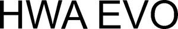

Trade Mark Journal No.2026/008 20 February 2026
WO0000001900433 (7,12,28)
Office of origin: Germany
Date of International Registration:31 October 2025
Date of designation in the UK:
31 October 2025

International priority date claimed: 7 October 2025
(Germany)
- Class 7
- Motor parts for motor vehicles; air filters for engines; turbochargers for engines; injection nozzles for engines; camshafts for engines; air cleaners [air filters] for engines; ball bearings for engines; fuel pumps for engines; fuel injection systems for engines; exhaust manifolds for engines; catalytic converters for engines; exhaust manifolds for engines; cylinder heads for engines; valves for engines; cylinders for engines; starters for engines; oil coolers for engines; speed governors for engines; filters for engines; intake manifolds for engines; cams for engines; fans for engines; pistons for engines; hydraulic controls for engines; mechanical controls for engines and machines; engine blocks for automobiles; engine cylinders for automobiles; oil cooling systems for engines; water pumps [engine parts] for vehicles; exhaust systems; silencers for engines [exhaust].
- Class 12
- Motor vehicles and vehicle parts and accessories, insofar as included in this class; sports cars; engines for motor vehicles, including electric motors; transmissions for motor vehicles; suspension systems for automobiles; stability control systems for vehicles; fuel lines for vehicles; transmissions with modified gear ratios, sports clutches; undercarriages for vehicles; vehicle cabins; vehicle wheels; vehicle doors; wheel axles; suspensions for vehicles; disc brakes; disc brake pads for vehicle brakes; car bodies for motor vehicles; car body parts and accessories for motor vehicles, as included in this class, in particular aerodynamic parts for car bodies, front spoilers, rear spoilers, rear panels, rear bumpers, car body extensions, side skirts, brake systems, chrome parts, roof racks, spacers, strut braces, suspension springs, horns, rims, grilles, wheel covers and hubcaps, tires, racing parts, sunroofs, stabilizers, shock absorbers, wind deflectors; hoods for vehicles; mirrors for motor vehicles; headlight covers as decorative covers; interior fittings for motor vehicles, insofar as included in this class, in particular storage boxes and tables, aluminum pedals and footrests, dashboard covers, armrests, car windows, chrome parts, door sill plates, rear shelves, blinds, carbon parts, consoles, leather trim, steering wheels, shift travel reductions, seat belts, gear levers, seats and covers, seat consoles, rearview mirrors, roll bars; motorized caravans.
- Class 28
- Vehicle models; toys; playing cards; games.
HWA AG
Representative: KLEINER Rechtsanwälte Partnerschaftsgesellschaft mbB, Alexanderstraße 3, 70184 Stuttgart, GERMANY